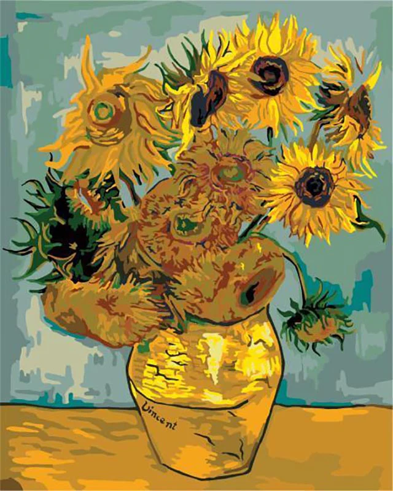

This Website is about Vincent Van Gogh, the Famous dutch artist.

Vincent Van Gogh, was a well-known dutch artist, generally considered to be the greatest after Rembrandt van Rijn, and one of the greatest artists of the Post-Impressionism Era. Who is famously known for the striking color, emphatic brushwork, and contoured forms, which can be seen in art such as:
Starry Night, 1889
Irises, 1889
Langlois Bridge at Arles, 1888
All of which can be seen Here in the gallery along with many more of his art.